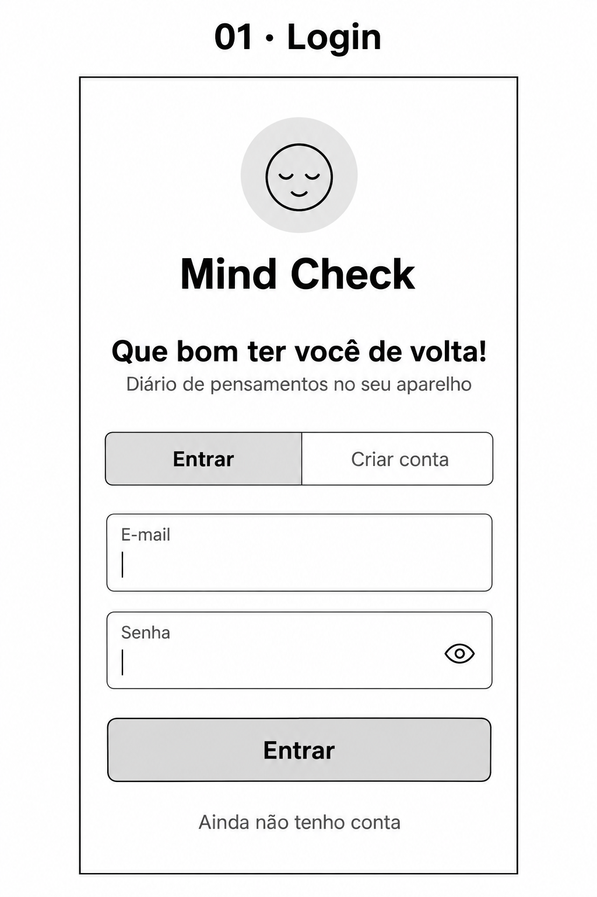
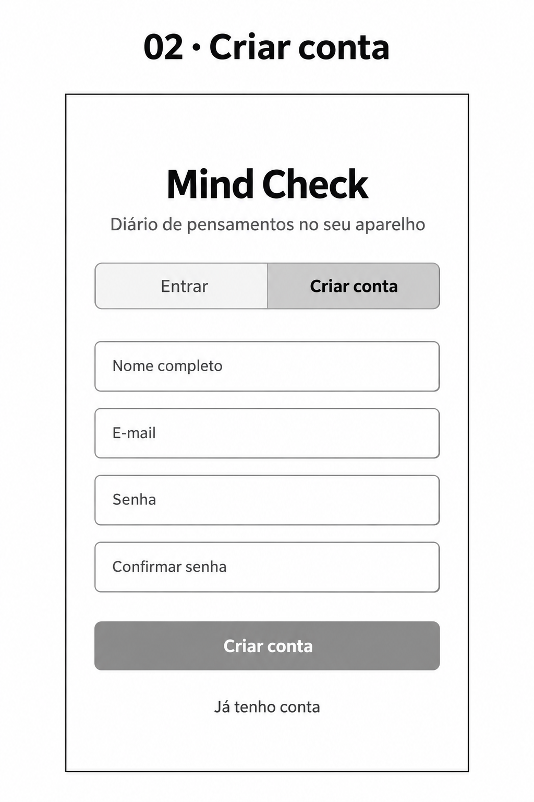
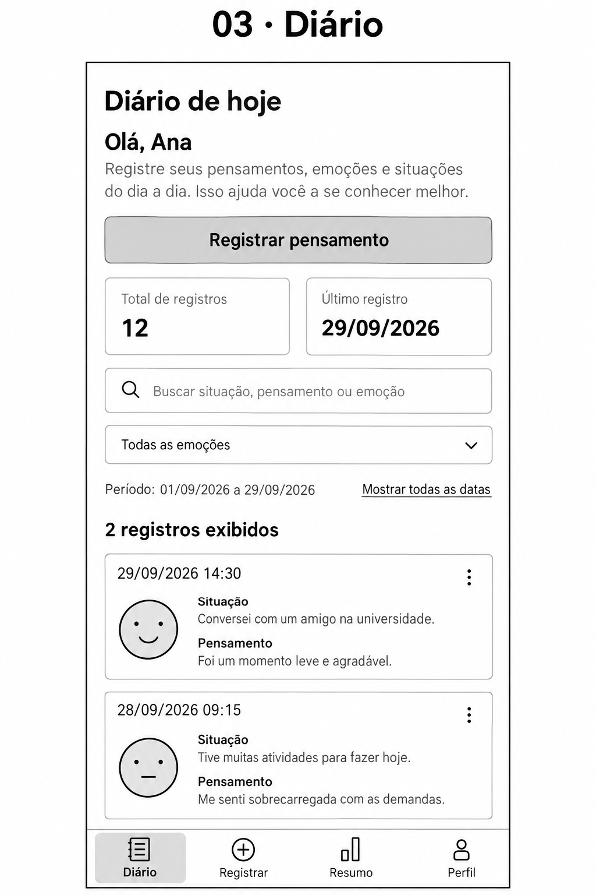
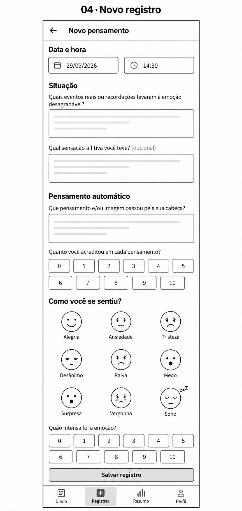
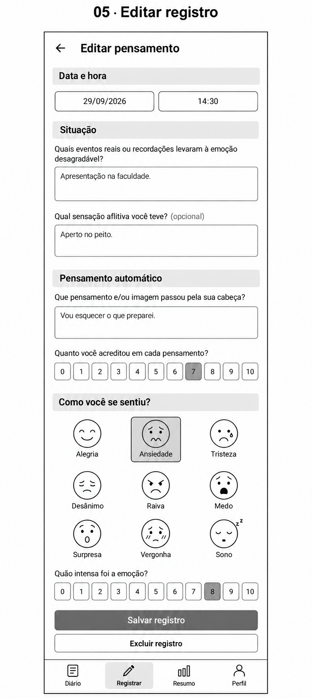
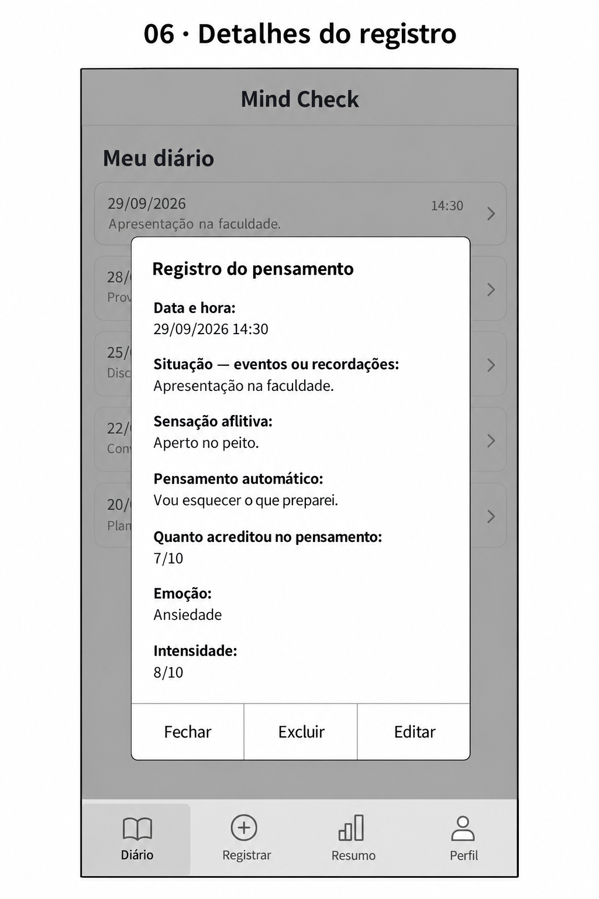
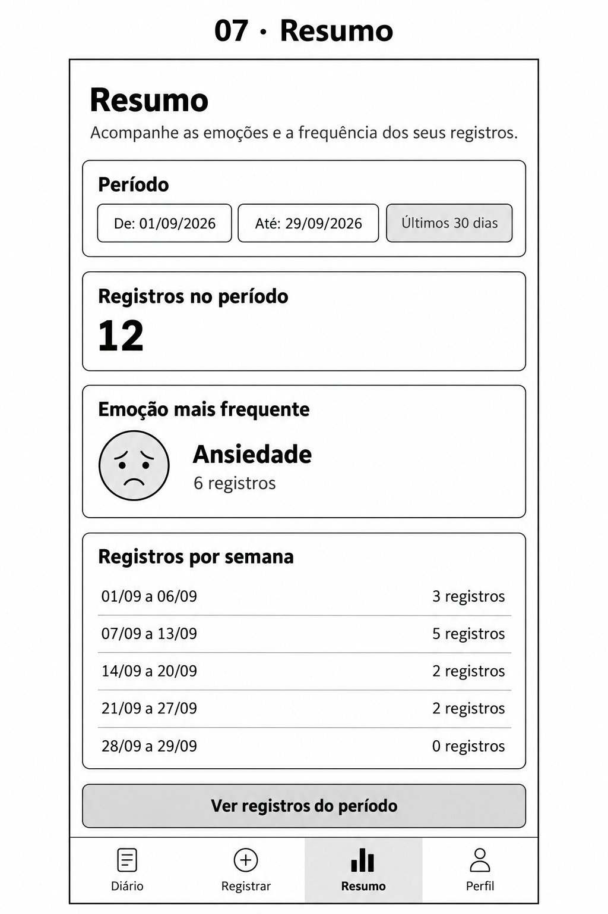
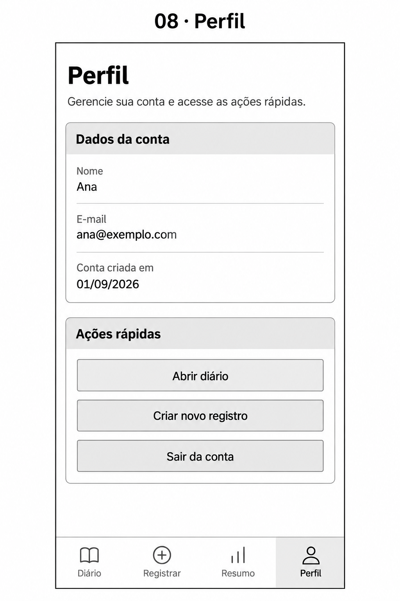
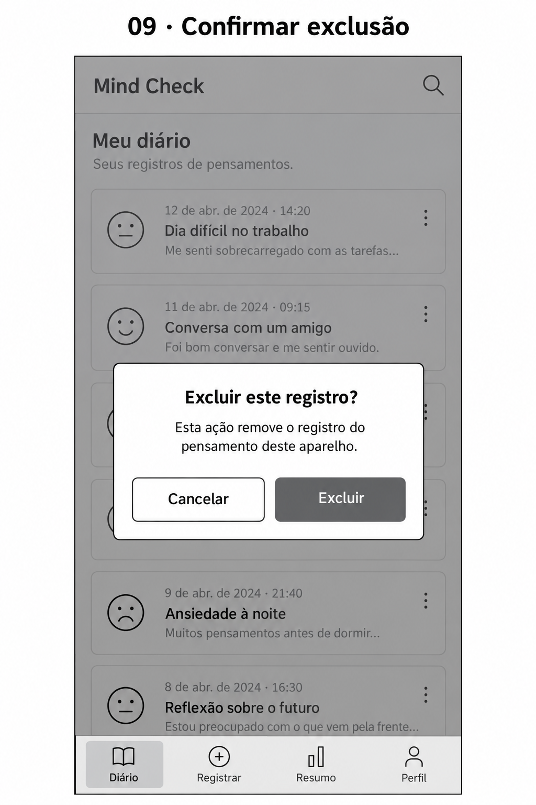

Nove imagens ilustrativas baseadas nas telas e nos diálogos do projeto. Dados fictícios. Clique para abrir cada PNG em tamanho original. Os formulários mostram todo o conteúdo rolável.









Geradas com a ferramenta integrada de geração de imagens. As instruções utilizadas estão em prompts.md e correcoes.md.